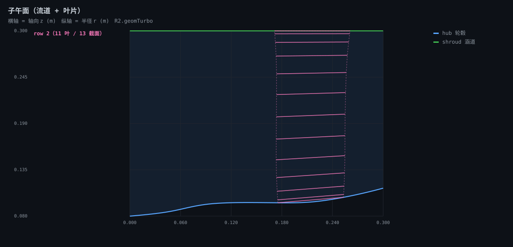
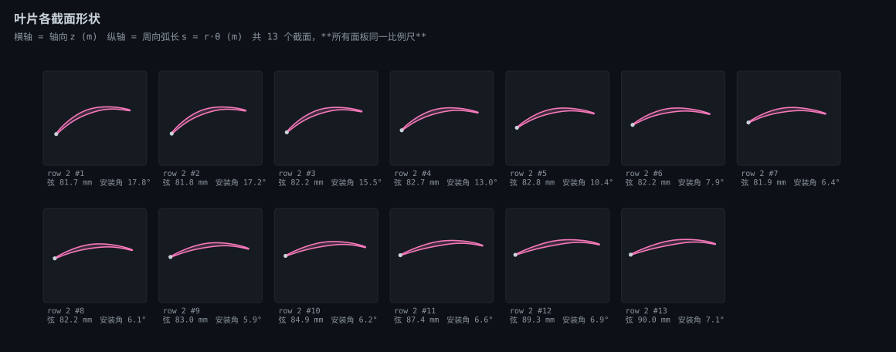
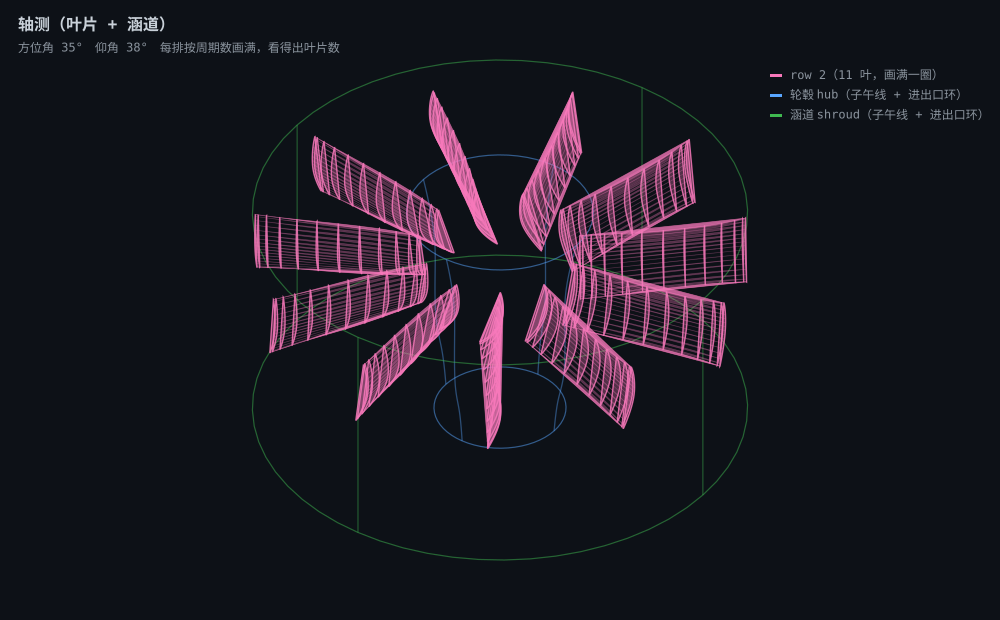

R2
由 tools/geom_view.py 生成 · 零依赖纯 SVG，断网可看 · 源文件 D:\Project\Research\turtbo-agent\cases\DF90-001\02-geometry\v9\autoblade\R2_13span\R2.geomTurbo
几何摘要
- 来源
- R2.geomTurbo
- 叶排数
- 1
- row 2
- 11 叶 13 截面 弦长 81.7–90.0 mm 安装角 5.9–17.8°
- hub
- 100 点 z 0.0000–0.3000 m r 0.0800–0.1132 m
- shroud
- 100 点 z 0.0000–0.3000 m r 0.3000–0.3000 m
子午面 · 流道轮廓 + 叶片径向位置

各截面形状 · 每个截面的剖面形状（前缘点标白，同一比例尺）

轴测 · 叶片与涵道的立体关系
